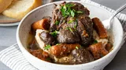

Braised Beef

Description
"If you're looking for the perfect comfort food that's also worthy of company, give this braised beef recipe a try," culinary producer and recipe creator Nicole McLaughlin (a.k.a. NicoleMcMom) says.
What Is Braised Beef?
Braising is a cooking method that involves slowly cooking meat in a covered pot with some sort of liquid. In the case of this recipe, chuck roast is braised in a mixture of beef broth and red wine. Braising is similar to stewing, but it requires less liquid.
Ingredients
- 3 ½ pounds boneless beef chuck roast
- 5 teaspoons kosher salt, divided
- 2 ½ teaspoons freshly ground black pepper, divided
- 2 teaspoons garlic powder
- 4 teaspoons olive oil
- 2 tablespoons butter
- 1 medium onion, chopped
- 1 pound cremini mushrooms, halved
- 3 medium carrots, cut into 2 inch pieces
- 1 head garlic, cut in half lengthwise
- 1 cup red wine
- 3 sprigs thyme
- 2 bay leaves
- 2 teaspoons Worcestershire
- 2 cups beef broth, or more as needed
- 2 tablespoons chopped fresh parsley
How to Braise Beef
You'll find the full, step-by-step recipe below — but here's a brief overview of what you can expect when you braise beef at home:
- Season and sear the beef on all sides.
- Cook the vegetables in the drippings and butter. Deglaze with wine.
- Return the meat to the pan with its juices, herbs, and Worcestershire sauce.
- Pour in the beef broth and bring to a simmer.
- Cover and place in the preheated oven until the meat is very tender.